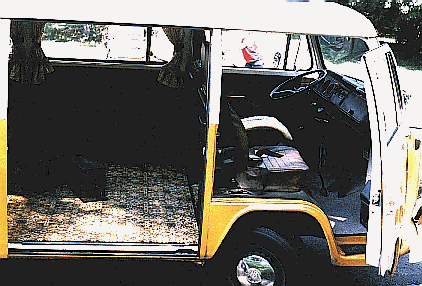

Heat, Rust, & Noise in VW's
Home Page

EDITOR'S NOTE: At some point during the period spanning August 2003 and October 2003, http://www.bulley-hewlett.com/ stopped resolving, and these pages were lost. Thankfully, the Way Back Machine managed to save a copy, so they were not lost forever. I have mirrored them here for the benefit of the VW Bus enthusiast community. I have attempted to mirror all the pages and images that were not exernal references. There is currently one broken link (a missing picture) that I am aware of. If you find more, or have any other suggestions that could improve these pages, don't hesitate to contact me. Finally, please don't hold me resonsible for the content of these pages. I'm doing this as a favor to others, and because I wanted the info myself. Let's try and keep the world a happy, friendly place. Now that that's out of the way, enjoy! -- Jason R. Thorpe <thorpej@shagadelic.org>

First off--Thank you for all of the interest in the site.
I understand that links to it are on a number of vintage auto sites worldwide. Terrific! Add it to your page, if you like; permission granted. Or print it out, and carry it with you everywhere. Keep it as a pet, if that makes you smile. My goal is to help as many folks as I can. A huge update to the site is in progress (yes, I've been saying that since 1998), incorporating answers to many of the questions folks have e-mailed. Check back for new photos, diagrams, and droll commentary. Someday, before The Second Coming, there will be an update. This paragraph is the only place you will find a shameless plug for our consulting buiness, some of the profits from which keep this web site going. In a nutshell, we provide guidance in strategic public affairs, internal communications, marketing, and change management to global companies and non-profits. If we can help your group, call. We now return you to your regularly scheduled program. For legal reasons, if you haven't checked out the "Terms of Use" page, please do. That way if you foolishly neglect to extinguish your cigar before working with volatile VW fumes, I can attend the funeral and tell your family "Shame, but 'twasn't my fault..." Terms of Use As you probably can tell, I am not a web guru. Nor a web Shiek, Czar, Potentate, Emperor, pedagogue, methodologist, know-it-all, or other capable or revered web thing. When making this site, (which took place through weary eyes, over a couple evenings), I didn't know how to make thumbnails or whether to use GIF's or JPEGs. I didn't do my best jobb of edidting either...../but I know VW's, so forgive the slow loading, long scrolls, ugly fonts, or links that don't work quite right. In the HUGE update I am working on for this site, things are a little less homey.
Where possible, I linked right to product websites… I'm not sure if this is Kosher, but I figured out how to do it, and it seemed handy, so if this isn't a-okay, let me know.
This was my first attempt at a web page, bear with me. Thanks, gmb. On with the show.

Executive Summary
If you answered yes, yes, or no to any of the above questions, this page is for you. This page contains definitive answers, and clearly illustrated techniques, and witty commentary. After studying the materials on this site, you will be able to make virtually any car quieter, more solid, warmer in the winter, cooler in the summer, and more comfortable.
 Look for this symbol for information you must not miss. Uncle Sam will keep you from screwing up an otherwise great job.
Look for this symbol for information you must not miss. Uncle Sam will keep you from screwing up an otherwise great job.

Details of this Study
Whether you have an '60's Ghia or Bug, a '70's era Bus, or a more recent Vanagon, you face the same problems: installing respectable heat, eliminating that ear-shattering VW racket, and preventing body-rotting corrosion. Why did Honda and Ford get this right, and VW failed?
Back at the VW factory, the design teams that worked on heat, noise, and rust took LONG lunches together and left early each day for Das Hofbraeuhaus. VW did not adequately address these three design shortcomings until the mid-1990's. By then, millions of VW's were produced with pathetic heat, LOUD interiors, and bodies that rust from under their hand-sanded enamel paint jobs. Shame.
The ideas presented here are the result of 12 years of informal experimentation with a myriad of VW's and Porsche 914's, and study of luxury cars like Lexus, Infinity, and Cadillac. Some ideas were lifted directly from my Jetta Turbo Diesel, which is remarkably quiet considering the power source.
Other ideas came from Ford, a company that commissioned an expensive study recently (1990?) to determine "what elements in a vehicle do people equate with 'quality'".
Ford found that the chief issue people looked/listened for, was highly ethereal, and many people didn't realize they were judging this, until the researchers pointed it out. People were consciously or subconsciously sensing how long after a given action (on the vehicle) was there audible resonance of that action. For example, when they closed the door, did it make one, solid, "clunk"? Or was it a long symphony of various parts, rattling, clanging, vibrating, and reverberating, "clatt-uh-dah-ur-annnk-dunkannng" (ala VW). Ford even zoomed in on their power locks, and glove box latches, and the sounds they made when being activated. Go listen to a new Ford, it is incredible.
Our project was a 1976 VW Bus, 2.0 Liter, FI, California original, seen here on day one, June 3, 1997. That's an "AS IS" dealer sticker on the side window. Duh…I wanted a warrantee.
J
This purchase was to be my wife's daily driver for the next 10 years. Having owned VW's for years, I wanted her to have the most solid, quietest, warmest vehicle possible; but she wanted THIS van. So we spared no expense in its restoration, and I used every idea I had devised to cure the ills of an old VW. We are still paying First USA for some of that "expense". We since changed
"our" minds, bought a White Westfalia, and sold the Bus; that's another story.As you can tell from the photos, this project was NOT a "recovery" effort, but a prevention effort. Although we replaced most everything mechanical on the bus, the bus was rock solid, rust free, and simply needed updating and maintenance parts (shocks, brakes, motor, etc.).
So here is what you can learn here:
 How to thermally insulate the body
How to thermally insulate the body
 How to maximize the heater function
How to maximize the heater function
 How to virtually eliminate noise in the cabin
How to virtually eliminate noise in the cabin

Important Concepts
Here are some basic concepts you should understand. They underlie all our solutions:
Metal conducts heat and noise freely.
• Large sheets of metal reverberate after the originating noise has ceased. • Untreated steel corrodes quickly. • Certain types of padding can absorb noise and shock. • Certain types of padding can reflect heat back into the passenger compartment. • Insulation can trap heat, keeping it where you want it. • Certain types of asphalt/rubber emulsions and tiles can eliminate reverberation and noise transmission in metal. • Certain types of asphalt/rubber emulsions can seal metal to prevent rust. • VW put nearly ZERO effort into insulating/noiseproofing their air-cooled vehicles. • The heater system in our VW was of intelligent design, but was poorly executed. • Our project vehicle was virtually rust free (This was NOT a "recovery" effort, but a prevention effort). • Redesigning motor mounts (ala the 1980-1983 Vanagon) to eliminate noise would have helped, but was outside the scope of our effort. •The following graphics show the typical protection VW designed into floors and walls. Little effort was made to inhibit corrosion, or stop the transmission of noise and heat. Sheet metal is relatively bare to the elements, and easily transmits heat and noise to the cabin.


Pathetic.
Let's remedy all this mess. FOLLOW THE LINKS below in order. They follow the chronology of this cure (which starts by pulling the motor), and show details (product names, etc.) that I will refer back to in subsequent pages. There will be a test at the end. Not multiple choice.

Engine Out, Then Back In | Interior Out, Noise Proofing | Heater Design, Install

Could our business help yours? Find out how, here: http://www.bulley-hewlett.com/
Write us at: mailto:gmbulley@bulley-hewlett.com